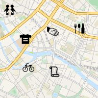
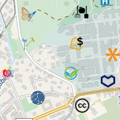
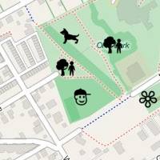
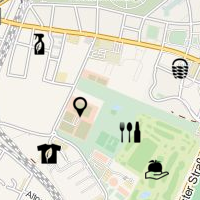

Welcome at the Mother of Many Maps
TransforMap is a movement to provide a common mapping platform for all alternatives to the dominant economic thinking.It will give everybody the opportunity to map all the initiatives, communities, projects, worker-owned, self-managed, democratically organised companies and other institutions dedicated to meeting people's needs, serving the common good and/or contributing to a sustainable way of life.
TransforMap invites all existing mapping initiatives to cooperate and co-create maps based on a common taxonomy, free software and standardised APIs. Its data will be published under an Open Data License.
Our world is transforming. There are old and new alternatives all over the planet. TransforMap will show you how to get there.
How To Start?
Explore the different Maps
Here you can find some maps generated out of the TransforMap dataset.-
Needs-Based Map

Explore the Map based on Needs -
Political Map

View the different identities -
Green Map

Go Green with TransforMap -
Organic Map

Be organic! -
Regional Map
Be regional! - Create your own!
FIXME Link to github/HOWTO
Map data © OpenStreetMap contributors - ODbL, Tiles © MapBox, Icons © greenmap.org/TransforMap